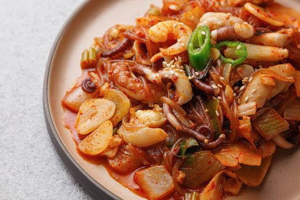

- 마라탕
- 떡볶이
- 국밥
낙곱새
낙지를 매콤한 양념에 볶아낸 한국 요리.
두족류 동물이 메인 재료라는 점과
매콤달콤한 양념에 칼칼하게 볶아낸다는 점에서 오징어볶음과 유사하다.
다만 메인재료인 낙지와 오징어의 식감이 미묘하게 다르다보니
같은 양념에 볶더라도 다른 풍미가 느껴진다.
해물파전 및 매운탕 종류와 궁합이 잘 맞아서
낙지볶음을 시키면 해물파전과 매운탕을 같이 시키거나
서비스로 콩나물국이나 조개탕처럼 맑은 국물이 같이 나올 때가 있다.
보통 전국에 알려진 낙지볶음은 국물이 거의 없는 형태지만
조방낙지처럼 전골이나 마찬가자인 국물 요리로 변형되거나
낙지덮밥, 낙지떡볶이 같은 바리에이션도 있다.
몇몇 낙지볶음 전문점에서는 매운맛 정도를 조절할 수 있게 해준다.
